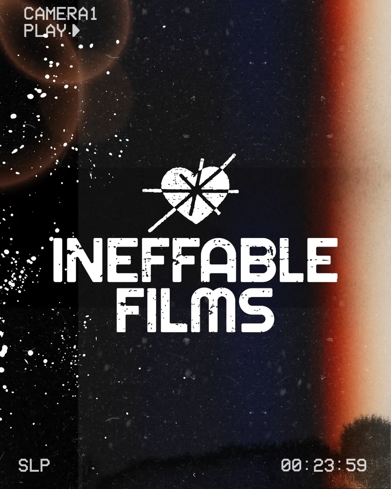
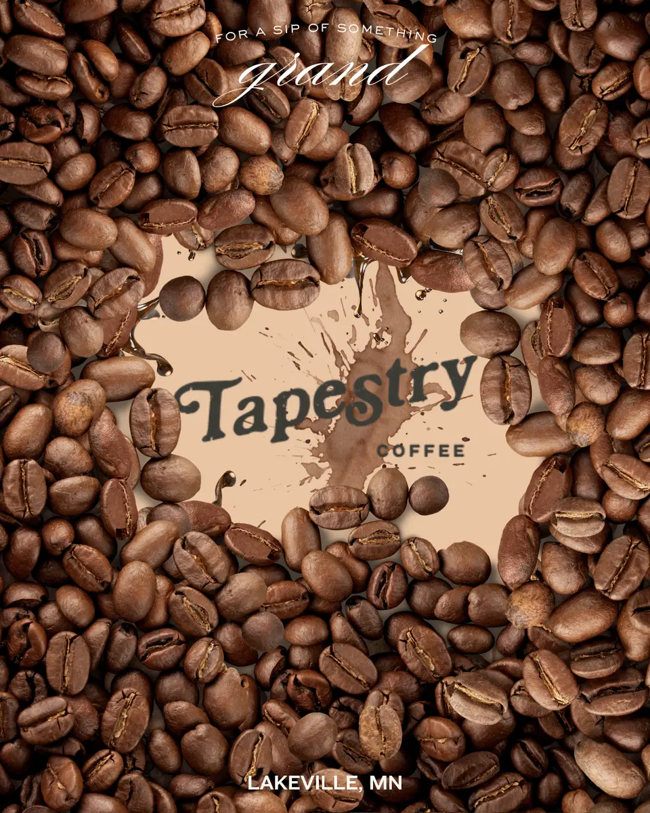
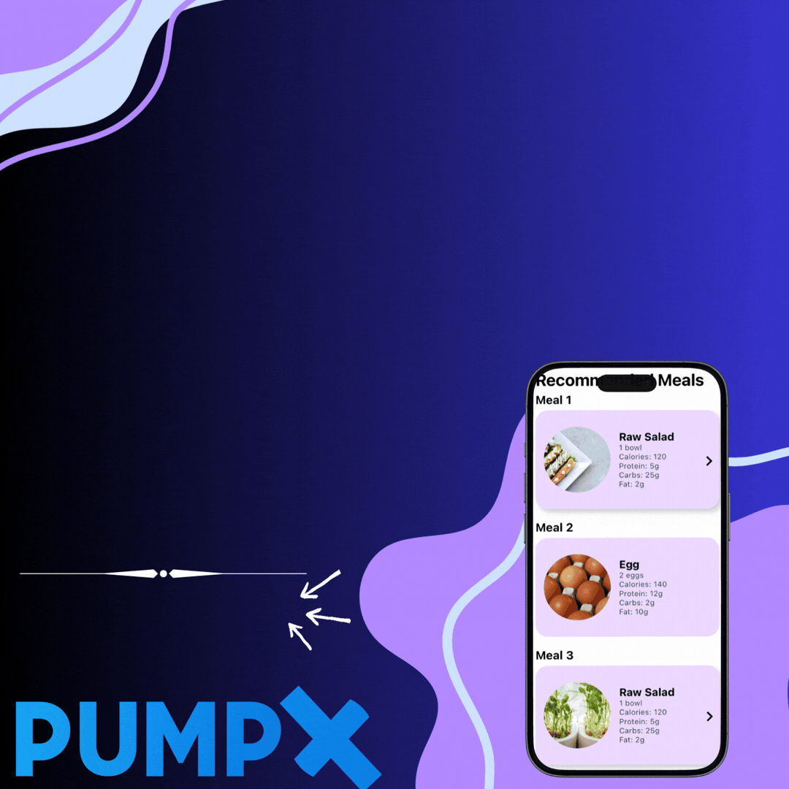
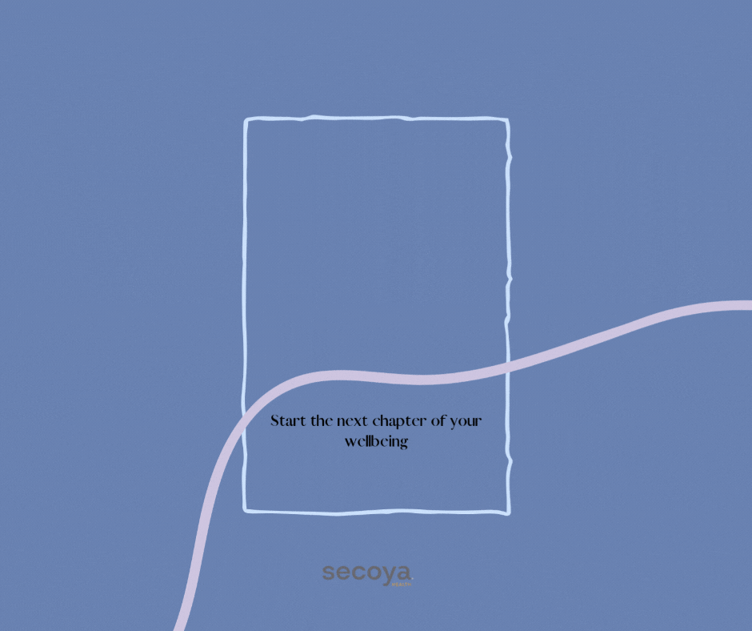

Product & UX Design
User flows, information architecture, role-based dashboards, responsive interfaces, and trust-centered conversion design.
Available for product, web & systems roles
Digital product designer and web developer building complete experiences. My work covers user flows, interface design, WordPress development, CRM automation, and launch.
01 // What I do
I work across research, experience design, development, and operations. I connect pieces that are often handled separately.
User flows, information architecture, role-based dashboards, responsive interfaces, and trust-centered conversion design.
WordPress architecture, Elementor, landing pages, technical SEO, hosting, DNS, SSL, and plugin integration.
HubSpot, Mailchimp, GoHighLevel, Microsoft Bookings, lifecycle automation, segmentation, analytics, and reporting.
Project ownership, team direction, process design, event systems, vendor coordination, and stakeholder communication.
02 // Selected work
Three end-to-end case studies showing the problem, the decisions behind the work, and what changed.
Product design · SaaS marketplace
A location-based insurance marketplace designed around trust, conversion, and three distinct user roles.
Web development · Design systems
Two connected brand websites designed for different audiences on one reusable, maintainable foundation.
Systems design · CRM automation
A multi-branch HubSpot and Microsoft Bookings system replacing manual follow-up for recurring seminars.
03 // Creative & brand work
Published campaigns and exploratory redesigns spanning brand identity, social content, and motion-led creative.

Published campaign · Nonprofit marketing
Platform-optimized event creative and a cinematic, VHS-inspired rebrand concept designed to separate the organization from conventional nonprofit visuals.
View design work →
Brand redesign concept
A playful space-themed identity built from the name itself. It is memorable, social-friendly, and distinctly local.
View design work →
Brand redesign concept
An immersive craft-forward direction using coffee textures, product framing, and a logo reveal designed for motion.
View design work →
Published social content
High-energy motion content developed to create a stronger stopping point than the brand’s static social posts.
View design work →
Brand redesign concept
A visual system balancing clinical credibility with warmth, energy, and a more contemporary digital presence.
View design work →04 // About
I am a St. Paul-based professional who likes owning the full problem: understanding how people move through an experience, deciding how the pieces connect, and then building it.
My background in marketing gives me a strong sense of audience, trust, and measurable outcomes. My product and technical work lets me turn that thinking into interfaces, websites, automations, and repeatable systems.
05 // Toolkit
Figma · User flows · Wireframing · Information architecture · Responsive design · Dashboard design
WordPress · Elementor · HTML · CSS · Technical SEO · Hosting · DNS · SSL · Google Analytics
HubSpot · Mailchimp · GoHighLevel · Microsoft Bookings · CRM administration · Automation · Project management
Adobe Creative Suite · Canva · Copywriting · Brand storytelling · Graphic design · Content strategy
06 // Contact
Open to full-time opportunities, select freelance projects, and conversations about product, web, and systems work.